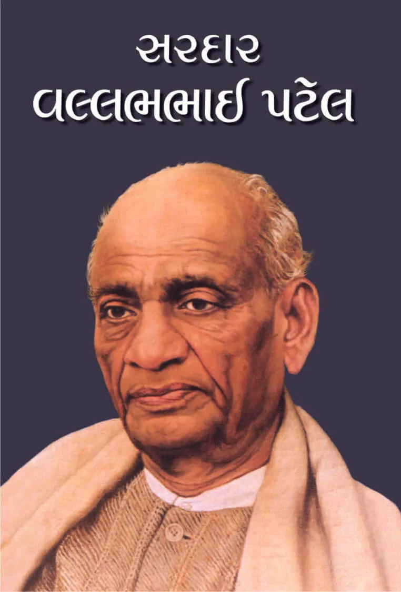

Summary:
ભારતીય સંસ્કૃતિના ઉલ્લેખ વગર જગતની સંસ્કૃતિની ચર્ચા કરવી અસ્થાને છે, કારણ કે જગતને ‘સનાતન સત્ય’ અને ‘સનાતન ધર્મ’ આ બંને સાત્ત્વિક તત્ત્વો ભારતીય સંસ્કૃતિએ જ આપ્યાં છે.
જે રીતે દરિયાની સમૃદ્ધિ નદીઓના સહયોગ વગર શક્ય નથી, એ જ રીતે મહાન વિભૂતિઓ વગર ઉત્તમ રાષ્ટ્રનું નિર્માણ શક્ય નથી.
આ પુસ્તકમાં તમને એવાં માનવરત્નોના જીવનમાં ડોકિયું કરવાનો મોકો મળશે, જેમણે નાનકડા ગામડાથી માંડીને સમગ્ર દેશમાં પોતાનાં જીવનકાર્યોની સુવાસ પ્રસરાવી છે.
અહીં રજૂ થયેલા પ્રત્યેક ઘડવૈયાએ ધર્મ, સાહિત્ય, શિક્ષણ કે પછી સમાજસુધારણા ક્ષેત્રે નવી જ ક્ષિતિજો ખોલી આપીને સમગ્ર વિશ્વને જિંદગી જીવવાનો પ્રાણમંત્ર આપ્યો છે.
આ ચરિત્રોનાં વાચન દ્વારા બાળકોનાં જીવનમાં સાહસ, ધૈર્ય, ધાર્મિક સહિષ્ણુતા, સત્યપ્રેમ, ઉદારતા, નીતિ, મક્કમતા, સહનશીલતા અને રાષ્ટ્રપ્રેમ જેવા ઉમદા ગુણો કેળવાશે અને તેમને ભવિષ્યમાં રાષ્ટ્રના જવાબદાર નાગરિક બનવાની પ્રેરણા મળશે.